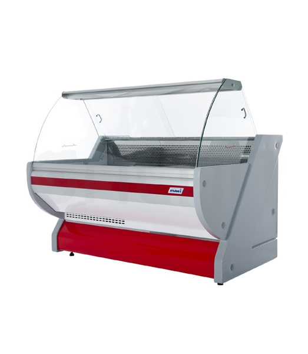
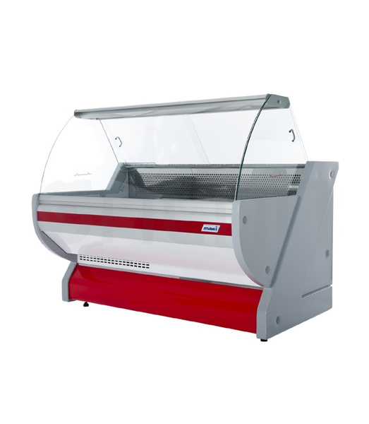

Sienos horizontali juosta namams 3 in 1 - Įranga 2020
2020.10.30 05:13
Pagrindinis Šaudymas iš lanko Jojimas arkliu Pilates Aerobika Golfas Joga Pagrindinis Kūno kūrimas Nardymas Įranga Ekstremalus sportas Pagrindinis - Įranga
Sienos horizontali juosta namams 3 in 1
ĮrangaDaugelis žinomų sportininkų ir sportininkų pradėjo plėtoti sėkmę su horizontalia juosta. Net be pretenzijų į čempionatą toks šovinys padės išlaikyti raumenų tonusą ir kūno sveikatą bet kokiame amžiuje. Toks paprastas prietaisas atveria daug galimybių pratimų komplekso požiūriu. Tuo pačiu metu jį lengva statyti namuose. Pažymėtina, kad šiame simuliatoriuje, taip pat kituose analoguose būtina laikytis saugos taisyklių ir atlikti specialistų rekomenduojamas klases.
Naudingi patarimai
Norint sukurti aukštos kokybės sienos horizontalią juostą, reikia prisiminti kai kuriuos niuansus, būtent:
Suvirinimo siūlės turi pranašumą, kad jos nėra laisvos. Tačiau pernelyg didelė apkrova ir išorinis poveikis lemia staigų konstrukcijos sunaikinimą. Fizinis poveikis yra maksimaliai sutelktas prietaisų kampuose. Vamzdis, kurio skerspjūvis yra kvadratinis, yra galingesnis už apvaliąją dalį. Tokiu atveju kvadratą lengviau sugriebti esant per didelėms apkrovoms. Panašioje situacijoje apskritimas sklandžiai lenkiasi. Medinės dalys netinka dėl įvairių priežasčių (su kai kuriomis išimtimis).Pažanga
Paprastiausio dizaino sienos horizontali juosta leidžia jums sukurti rankas, abs ir krūtinės raumenis. Svarbiausia yra teisingai parengti brėžinius ir apskaičiuoti naudotojų antropometrinius duomenis. Modelio populiarumas dėl medžiagų prieinamumo ir montavimo paprastumo. Korpusas pritvirtintas prie sienos su specialiais kabliukais. Simuliatorius skirtas vamzdžiui, kurio skerspjūvis yra kvadratinis, dėl papildomo saugumo paviršiai yra priklijuoti maždaug 5 mm storio polimerine medžiaga.
Kita sienos horizontalios juostos 3 in 1 versija yra pirmiau minėtos versijos prototipas. Prietaisas skiriasi tik naudojant apvalų besiūlių vamzdžių, pagamintų iš chromuoto nikelio, negalima (negali būti painiojamas su nerūdijančio plieno). Speciali medžiaga leidžia sumažinti statramsčius ir elementų skerspjūvį. Dėl to šoviniai tampa estetiškesni ir lengvesni (3-4 kg). Tokio simuliatoriaus gamybai reikia suvirintojo įgūdžių. Ypatybė: laikiklių sulenkimas viduje 0, 2 mm. Turi būti mažesnis už vamzdžio skersmenį, kuris, kruopščiai veikiant, užtikrina 4-5 metų trukmės šalinimą.
Aprašymas
Sienos horizontalios juostos abiejų tipų namams yra konstrukcija su skersiniu ir strypais. Jie gali atlikti kojų ištraukas, pilvo pratimus ir standartinius presus. Pagrindiniai tokio įrenginio matmenys yra atstumas tarp rankų kraštų po rankena (vidutinė vertė - 1100 mm). Geriausia, jei šis atstumas atitiktų sportininko smagračio dydį.
Jei lėktuve yra keli žmonės, pagrindiniai matmenys imami pagal didžiausio sportininko parametrus. Visi kiti matmenys gali būti proporcingai keičiami.
Didelės galimybės, lyginant su sienos horizontalia juosta namams (3 iš 1), yra grindų pasirinkimas. Šiame simuliatoriuje yra prieinami pratimai, kuriuose akcentuojama ar guli. Tačiau tokie analogai nėra skirti įrengti gyvenamajame rajone, nes jiems reikalingas saugus tvirtinimas prie grindų ir užima daug naudingos erdvės. Jo gebėjimas persidengti yra apie 400 kgf / kv. m, o gyvenamųjų patalpų norma neviršija 250 kgf / kv. m
Sienos horizontali juosta / juostos
Labiausiai atsakingas už namų simuliatoriaus įrengimą turėtų būti laikomas montuojamas ant sienos. Pavyzdžiui, gipso kartono ir panašios medžiagos (pvz., PHB, putų blokai, kompozicinės medžiagos, faneros) netinka aptariamo įrenginio montavimui.
Ekspertai nerekomenduoja pritvirtinti šovinio ant guolių sienų. Kadangi tai gali sukelti įtrūkimus. Kai kurios teisėkūros lygmens šalys draudžia tokius manipuliavimus. Todėl, norint surengti svarstomo tipo sportinį kampą, lieka tik betono ar plytų pertvaros, taip pat sienų dangos, pagamintos iš rąstų ar medienos.
Mount
Vienas sieninio plieno horizontalios juostos 3 in 1 laikiklio tvirtinimo rodiklis neturi viršyti šlyties ir lenkimo parametro pagal fiziškai išvystyto sportininko nugaros raumenų 130 kgf. Apibendrinant, tvirtinimo detalėms naudokite bent M-8 tipo varžtus su cinkuotais inkarais. Šio dizaino plastikiniai kaiščiai tikrai netinka.
Varžtų ir inkarų be apdailos nustatymo kriterijai, priklausomai nuo sienos pagaminimo medžiagos (milimetrais):
Betonas - 120. Mūrinis mūrinis - 150. Mediena ir medžio masyvas - 180 m. Malkos - 220.M-8 dydžio varžtas gali išsikišti nuo tvirtinimo inkaro ne daugiau kaip 20 mm. Priešingu atveju reikia pasirinkti M-10/12/16 tipo tvirtinimo elementus. Toliau atlikite prijungimo taškų skaičiavimą. Bendras atraminis pajėgumas turi būti lygus simuliatoriaus darbinei apkrovai ir padaugintas iš 2, 5 koeficiento.
Pavyzdys. Horizontali juosta skirta 200 svarų svorio. Visi spaustuvai turi pateikti parametrus, apskaičiuotus pagal formulę - 200 x 2, 5. Pasirodo, rodiklis yra 500 kgf, po kurio guolio pajėgumas padalintas iš 130 kgf (kiekvieno prikabinimo apkrova). Pasirodo, kad jums reikia bent keturių fiksavimo taškų (500/130 = 3, 84). Plytų ar betono pertvaroje atstumas tarp taškų neturi būti didesnis nei 0, 7 nuo inkaro konstrukcijos.
Pakabos aukštis
Paskutinis sieninio strypo įrengimo namuose etapas yra pasirinkti optimalią vietą, kurioje ją įdiegti, atsižvelgiant į dydį ir komfortą. Šiam procesui reikia matuoti pėdsaką, kuris leis jums rasti tinkamą vietą. Šis rodiklis žymi didesnės šeimos nario išplėstinę ranką, kurią lemia viršutinė skersinio padėtis.
Pats matavimas atliekamas atsižvelgiant į galvutės aukščio parametrus nuo pečių iki vainiko. Su maždaug 50 milimetrų marža. Atstumas nuo skersinio iki lubų neturi būti mažesnis už šį parametrą. Ekstremaliais atvejais suformuokite struktūrą taip, kad galėtumėte įsitvirtinti, sugriežtinti kojas, o ne sumušti temechkom į lubas.
Vaikams
Pradedantiesiems sportininkams jauname amžiuje horizontali juosta namuose yra dar lengviau. Šis simuliatorius yra gana realus įrengti duris, atsižvelgiant į tai, kad dinaminės apkrovos ir masės poveikis šauliui yra mažesnis. Šiuo atveju yra realu naudoti atramines konstrukcijas, pagamintas iš kietmedžio.
Toks įtaisas gali sujungti ne tik horizontalią juostą, bet ir barus kartu su Švedijos siena. Rankenos geriausiai gaminamos iš šilumos susitraukiančių vamzdžių, kurių skersmuo yra 25-30 proc. Didesnis už pagrindinių elementų išorinį dydį. Vietoje jie yra sumontuoti padedant su daliniu galios džiovintuvu. Gofravimas sukuriamas naudojant papildomus žiedus. Šis sprendimas yra labai praktiškas ir ne brangus.
Įdomios straipsniai
2020-10-30Kaip padaryti žiemos žūklės dėžutę su savo rankomis?
Šalto oro atsiradimas netampa kliūtimi realiems privačios pramonės mėgėjams. Priešingai, daugelis žvejų laukia šios poros. Kad žuvis būtų malonus ir pats procesas pasirodė esąs kuo produktyvesnis, turėtumėte kruopščiai pasiruošti. Žvejybos metu žvejas naudoja įvairius gabalus, jaukus ir pašarus. Tinkamu momentu jie vi
2020-10-30Futbolo klubas „Štutgartas“: istorija
Futbolo klubas Stuttgart - komanda iš Vokietijos, įsikūrusi toje pačioje mieste. Įsteigimo data yra 1893 m. Rugsėjo 9 d. Komandos istorija Futbolo klubas „Štutgartas“ turi ilgą ir įdomią istoriją. Iš pradžių vokiečių komanda dalyvavo kitame sporte, būtent regbyje. Futbolo istorijos pradžia prasideda vos dvidešimt metų. Futbolo klubas „Štutga
2020-10-30Pratimai tricepsui namuose: aprašymas su nuotraukomis ir žingsnis po žingsnio atlikimo instrukcijos
Tricepsas yra raumenys, atsakingi už viršutinių galūnių tūrio vizualinį formavimąsi. Mokydami šią raumenų grupę, galite vizualiai padaryti savo rankas galingesnes ir didesnes. Sėkmingas pratimų, skirtų siurbti tikslinę teritoriją, sėkmė priklauso nuo reguliaraus krovinių didėjimo. Pažvelkime į geriau
2020-10-30„Praktikantas ER-6 Pro“. Echo Sounder „Praktikas“: vadovas, peržiūra, specifikacijos ir apžvalgos
Žvejai vis dažniau naudoja echolokacijos įrangą. Tokių prietaisų gamintojai nuolat tobulina savo gaminius. Šiandien populiarios vidaus gamybos mašinos. Tai susiję su papildomos informacijos apie ją teikimu, taip pat su Rusijos gamintojų garantinių įsipareigojimų vykdymu. Vienas geriausių pateikto tipo prietaisų buvo ER-6 Pro modelis. Žodynas ilgą l
2020-10-30Mėtų svorio netekimas: receptai, savybės, kontraindikacijos
Mėtų yra viena iš pirmųjų vietų visose kvapnėse žolėse. Iš viso yra apie 70 rūšių, ir tai yra tik pagal oficialius šaltinius. Dabar šį augalą galima rasti visur: miškuose, sode ar sode. Taikyti ją skirtingose srityse (medicina, kosmetologija ir kt.) Kalyklos taip pat puikiai tinka prarasti svorį. Jis padeda skrandžio d
2020-10-30„Simonov“ savarankiška karbina - SKS-45
„SKS 45“ - „Simonov“ savarankiškas krovimo karabinas - sovietinis karabinas, kurio dizainą sukūrė Rusijos ginklininkas Sergejus Simonovas. Oficialus savaiminio krovimo karbino priėmimas įvyko 1949 m. Pirmieji ACS 45 variantai buvo pristatyti 1945 m. Pradžioje karo metu veikiantiems vienetams ir formacijoms. Iš tiesų šis
Populiarios Kategorijos 2020
Pratimai „Hammer“ - puikus būdas pumpuoti gana masyvias ir gražias rankas. Pratimai su hanteliais namuose moterims: efektyvių pratimų, rezultatų, atsiliepimų rinkinys Cinamonas svorio netekimui: atsiliepimai, efektyviausi receptai Chabarovsko baseinai: pilnavertis mokymas ištisus metus „Maracana“ stadionas - „Starry Story“ žvaigždė Sylvain Viltor: biografija, karjera, pasiekimaiRekomenduojama
Kas yra lieknėjimo sriuba. Dietos apžvalgos Londono futbolo klubai ir jų pasiekimai Rusijos futbolininkas Valerijus Kechinovas: biografija, pasiekimai ir įdomūs faktai Dviračių tipai ir dviračių naudasokosport.com © Copyright 2020.
Redaktoriaus Pasirinkimas
Įdomios straipsniai
Virvių tipai. Tempimas pradedantiesiems
Kiekvienas, kuris pradeda užsiimti tempimu, nori kada nors sėdėti ant skilimų ir paspausti draugus. Bet ar šis įgūdis yra prieinamas visiems? Ir jei visiems, kiek suaugusiųjų daro skilimus? Straipsnyje pateikiami atsakymai į svarbiausius klausimus, susijusius su skilimų kūrimu, ir pateikiama keletas rekomendacijų, kurios padės pasiekti norimą.
Kas yra postūrinis mokymas. Posturalinis raumenų mokymas. Mokymas pradedantiesiems
Posturalinis mokymas yra naujovė fitneso pramonėje. Tai leidžia sustiprinti raumenis, kurių negalima naudoti su įprastu treniruotės metu.
- Hidroizoliacinės medžiagos - Izoliacinės medžiagos ...
- Drabužiai juostelės (30 nuotraukos): suknelės, megztiniai ...
- Horizontali lanksti LED juosta balta/šilta 60LED/12W/m ...
- Horizontalios juostos plėtimas: aprašymas - Įranga - 2020
- ⚙HORIZONTALI JUOSTA SU UŽVEDIMO EFEKTU HTML5, CSS3 IR ...
- Kaip pasirinkti horizontalų juostą butui - Sporto ...
- Sportinė horizontali juosta: matmenys, brėžiniai, tipai ...
- Kaip padaryti horizontalią juostą - Sporto įranga - 2020
- Klaipėdos vėliava ir jos istorija
- horizontali juosta skelbimai - Skelbiu.lt
- Hidroizoliacinės medžiagos - Izoliacinės medžiagos ...
Horizontali juosta su užvedimo efektu html5, css3 ir įkrovos lape Autorius: admininfo.info Paskelbimo Data: August/2020. Ko mums reikia? Vietinis serveris (aš jau sakiau, kad naudoju „Xampp“) ·
- Drabužiai juostelės (30 nuotraukos): suknelės, megztiniai ...
Horizontali juosta ant sienos, jei naudojate tam skirtus tvirtinimo varžtus, gali būti pritvirtinta ant bet kokio vertikalaus paviršiaus. Kokie yra modelio privalumai? Santykinai mažas dydis. Ši horizontali juosta gali tilpti net mažame kambaryje. Ir tai vyksta tuo pačiu metu labai, labai mažai. Jis gali būti bet kokiame aukštyje.
- Horizontali lanksti LED juosta balta/šilta 60LED/12W/m ...
Prekė sėkmingai įdėta į krepšelį. Rinktis daugiau prekių. Užsisakyti
- Horizontalios juostos plėtimas: aprašymas - Įranga - 2020
Senoji Klaipėdos vėliava gerokai skiriasi nuo dabartinės. Senojoje vėliavoje apačioje buvo raudona horizontali juosta, viršuje geltona ir miesto herbas viršutiniame kairiajame kampe. Dabartinės vėliavos spalvos išdėstytos kitaip - horizontaliai.
- ⚙HORIZONTALI JUOSTA SU UŽVEDIMO EFEKTU HTML5, CSS3 IR ...
Horizontali juosta kieme arba name - tai raktas į sveikatą ir gerą nuotaiką. Labai gerai, jei kiekvieną dieną galite pakelti arba nugara ant horizontalaus strypo, o ne užkliuvę treniruoklių salėje, bet ore. Taigi, pradėsime statyti horizontalią juostą gatvėje.
- Kaip pasirinkti horizontalų juostą butui - Sporto ...
Horizontali juosta namams. Šis šliuzas be gręžimo yra pritvirtintas traukos jėga, turintis pavasario dizainą. Kokios priežastys, kodėl daugelis žmonių renkasi horizontalią juostą sportui? Jis turi keletą privalumų: Norėdami ją įdiegti, nereikia sėti skylių į sieną ir nepažeisti visų rūšių tvirtinimo detalių ir varžtų.
- Sportinė horizontali juosta: matmenys, brėžiniai, tipai ...
Horizontali juosta su stuburo išvarža # 8212; jūsų „Move & Flex“ garantija. Stuburo išvaržos gydymas yra sudėtingas ir ilgas procesas. Daug paprasčiau tiesiog sekti „Move & Flex“ ir reaguoti į visas nugaros skausmo apraiškas. Labai svarbu atlikti prevenciją, ypač jei žmogus yra linkęs į osteochondrozę.
- Kaip padaryti horizontalią juostą - Sporto įranga - 2020
Namų horizontali juosta tai daro pats: brėžiniai, diagramos, nuotraukos. Share. Pin. Tweet. Send. Share. Send. Siekiant išlaikyti fizinį tinkamumą, ne kiekvienas turi galimybę eiti į sporto salę, bet pratimai gali būti atliekami namuose. Norėdami sustiprinti rankų raumenis, nugarėlė ir spauda gali padaryti namo horizontalią juostą.
- Klaipėdos vėliava ir jos istorija
Tačiau horizontali juosta, priešingai, padės jums atrodyti kaip mažas grybas, kaip jūsų kūnas bus byrėti. Tall merginos dažnai gėdijasi savo augimą. Bet tai nėra taip baisu, kaip atrodo. Jūs galite dėvėti tą patį, kaip viskas ir vis dar atrodo minkštas ir mažoji princesė. Dėl jums priartėti dalykus su juosmens juosta, ir ...
- horizontali juosta skelbimai - Skelbiu.lt
Horizontali juosta yra simuliatorius, leidžiantis išlaikyti savo kūną geros sveikatos namuose. Horizontalios juostos išvaizda ir funkcionalumas skiriasi. Jie gali būti tiek namuose, tiek šalyje ir gatvėje. Horizontali juosta - tai treniruoklis, kurį galima pagaminti savarankiškai.
Horizontali juosta su užvedimo efektu html5, css3 ir įkrovos lape Autorius: admininfo.info Paskelbimo Data: August/2020. Ko mums reikia? Vietinis serveris (aš jau sakiau, kad naudoju „Xampp“) ·
Horizontali juosta ant sienos, jei naudojate tam skirtus tvirtinimo varžtus, gali būti pritvirtinta ant bet kokio vertikalaus paviršiaus. Kokie yra modelio privalumai? Santykinai mažas dydis. Ši horizontali juosta gali tilpti net mažame kambaryje. Ir tai vyksta tuo pačiu metu labai, labai mažai. Jis gali būti bet kokiame aukštyje.
Prekė sėkmingai įdėta į krepšelį. Rinktis daugiau prekių. Užsisakyti
Senoji Klaipėdos vėliava gerokai skiriasi nuo dabartinės. Senojoje vėliavoje apačioje buvo raudona horizontali juosta, viršuje geltona ir miesto herbas viršutiniame kairiajame kampe. Dabartinės vėliavos spalvos išdėstytos kitaip - horizontaliai.
Horizontali juosta kieme arba name - tai raktas į sveikatą ir gerą nuotaiką. Labai gerai, jei kiekvieną dieną galite pakelti arba nugara ant horizontalaus strypo, o ne užkliuvę treniruoklių salėje, bet ore. Taigi, pradėsime statyti horizontalią juostą gatvėje.
Horizontali juosta namams. Šis šliuzas be gręžimo yra pritvirtintas traukos jėga, turintis pavasario dizainą. Kokios priežastys, kodėl daugelis žmonių renkasi horizontalią juostą sportui? Jis turi keletą privalumų: Norėdami ją įdiegti, nereikia sėti skylių į sieną ir nepažeisti visų rūšių tvirtinimo detalių ir varžtų.
Horizontali juosta su stuburo išvarža # 8212; jūsų „Move & Flex“ garantija. Stuburo išvaržos gydymas yra sudėtingas ir ilgas procesas. Daug paprasčiau tiesiog sekti „Move & Flex“ ir reaguoti į visas nugaros skausmo apraiškas. Labai svarbu atlikti prevenciją, ypač jei žmogus yra linkęs į osteochondrozę.
Namų horizontali juosta tai daro pats: brėžiniai, diagramos, nuotraukos. Share. Pin. Tweet. Send. Share. Send. Siekiant išlaikyti fizinį tinkamumą, ne kiekvienas turi galimybę eiti į sporto salę, bet pratimai gali būti atliekami namuose. Norėdami sustiprinti rankų raumenis, nugarėlė ir spauda gali padaryti namo horizontalią juostą.
Tačiau horizontali juosta, priešingai, padės jums atrodyti kaip mažas grybas, kaip jūsų kūnas bus byrėti. Tall merginos dažnai gėdijasi savo augimą. Bet tai nėra taip baisu, kaip atrodo. Jūs galite dėvėti tą patį, kaip viskas ir vis dar atrodo minkštas ir mažoji princesė. Dėl jums priartėti dalykus su juosmens juosta, ir ...
Horizontali juosta yra simuliatorius, leidžiantis išlaikyti savo kūną geros sveikatos namuose. Horizontalios juostos išvaizda ir funkcionalumas skiriasi. Jie gali būti tiek namuose, tiek šalyje ir gatvėje. Horizontali juosta - tai treniruoklis, kurį galima pagaminti savarankiškai.
 
